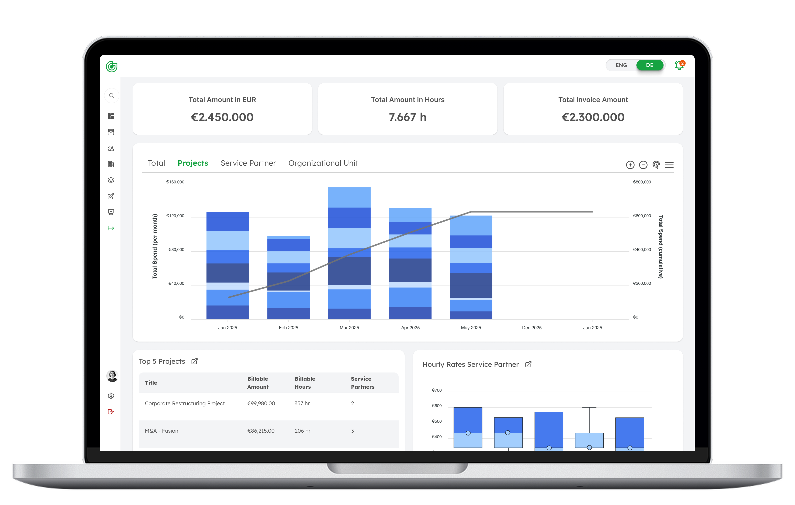
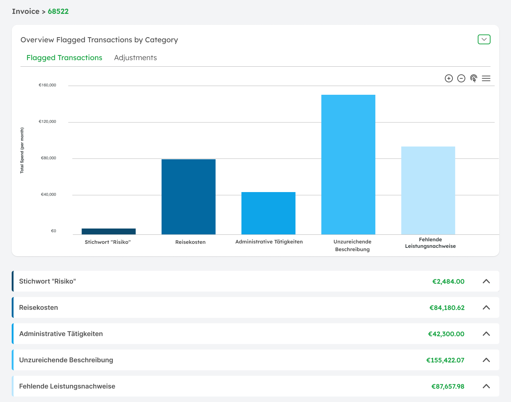

Five phases.
One consistent system.
Research & Audit
Deep analysis of the existing product: drop-off points, friction screens, and how each persona experienced the tool differently. Core finding: raw tables with no visual hierarchy forced users to mentally translate data before they could act on it.
Information Architecture & User Flows
Restructured the entire navigation logic around one insight: each role needed a fundamentally different entry point. A CFO lands on KPI summary. A PM lands on deviation alerts. An Assistant on the action queue. Same data — three lenses.
Design System
Before a single screen, I built the system. Typography scale, spacing tokens, a semantic three-state status system (on-budget / at-risk / over-budget), table components, KPI cards, and chart patterns. Built platform-agnostic from day one.
UI Design & Figma Prototyping
With the system in place, screen design moved fast. Centrepiece: the Live Project Cockpit — replacing table-heavy interfaces with visual KPI layers, budget curves, spend-vs-forecast charts, and traffic-light status indicators.
Frontend Implementation
I implemented UI components directly in Tailwind CSS. Later in the Charon phase, I vibe-coded the sticky note feature end-to-end — sketch → code → live product, independently. No interpretation gap, no delay.


